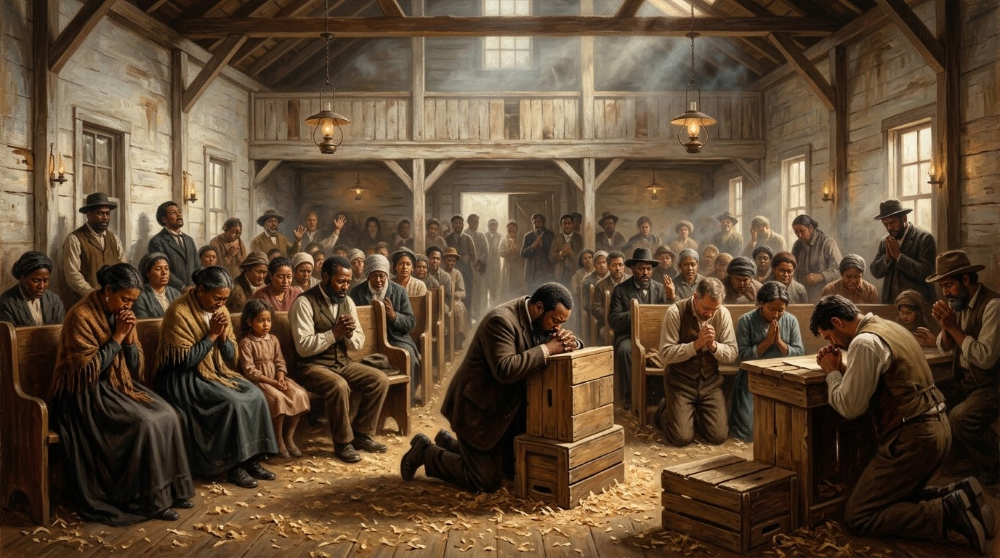

Os Bastidores, os Personagens Esquecidos, as Raízes Quakers e os Alertas de Frank Bartleman

O Avivamento da Rua Azusa (1906–1909), em Los Angeles, é reconhecido universalmente como a matriz do movimento pentecostal global. No entanto, a historiografia eclesiástica tradicional muitas vezes reduz esse fenômeno complexo a uma narrativa linear focada exclusivamente na figura do pastor William J. Seymour.
Embora Seymour tenha sido o líder vocacionado para personificar a mansidão e a liderança do galpão no número 312 da Rua Azusa, a irrupção do mover foi sustentada por uma rede de intercessores anônimos, mulheres atuantes, influências teológicas Quakers e o olhar jornalístico-profético de Frank Bartleman. Este estudo analisa os bastidores do avivamento, investigando os fatores que permitiram o seu nascimento e os desvios que anteciparam o seu declínio.
Uma das influências mais profundas e menos exploradas na gênese do pentecostalismo moderno veio de David Gray, um influente líder da Sociedade dos Amigos (Quakers). Gray era sogro de Charles Parham (casado com Sarah Thistlethwaite, cuja família tinha raízes profundas na tradição Quaker).
A teologia e a eclesiologia Quaker traziam marcas que foram assimiladas diretamente por Parham e, subsequentemente, por William J. Seymour:
A influência de David Gray proporcionou a Parham um modelo eclesial flexível que aceitava intercessores de diferentes origens. Foi sob essa atmosfera que William J. Seymour, um filho de ex-escravizados cego de um olho, pôde frequentar a escola bíblica de Parham em Houston (mesmo que, devido às leis raciais locais, precisasse inicialmente ouvir as aulas no corredor com a porta entreaberta). A semente da igualdade espiritual plantada pela tradição Quaker frutificou na mente de Seymour.
Antes de Azusa tornar-se o endereço famoso mundialmente, o Espírito Santo operava no cotidiano de homens e mulheres humildes em Los Angeles:
Frank Bartleman foi o principal historiador contemporâneo da Rua Azusa. Diferente de muitos que buscavam projeção pessoal, Bartleman era um pregador e intercessor itinerante que vivia em voluntária pobreza, registrando os acontecimentos em diários que se tornaram o livro "Azusa Street".
Antes da chegada de Seymour a Los Angeles, Bartleman já passava noites prostrado com o rosto no chão e a boca na poeira, clamando por um despertamento espiritual. Ele manteve correspondência direta com Evan Roberts, o líder do Avivamento de Gales (1904), estabelecendo uma ponte espiritual entre o mover galês e o derramamento californiano.
Bartleman registrou a célebre frase que sintetizou a essência ética e teológica de Azusa: “A linha de cor foi lavada pelo Sangue de Cristo”. Em uma sociedade profundamente segregada pelas leis Jim Crow, negros, brancos, latinos e asiáticos ajoelhavam-se juntos no mesmo piso cobertos de serragem, abraçando-se e buscando a Deus como iguais.
Frank Bartleman foi um dos primeiros a diagnosticar e alertar publicamente sobre os sinais de declínio do avivamento, antes mesmo da cisão final da missão em 1909.
Conforme os registros de Bartleman, o avivamento começou a perder sua pureza original quando elementos estranhos à dinâmica inicial foram introduzidos:
“O Espírito Santo é extremamente sensível. Ele não habita na atmosfera de disputa de cargos, orgulho de facção ou controle humano. Quando o homem assume o trono, o Espírito se retira para o deserto.” — Frank Bartleman
O autor e pesquisador Tommy Welchel conviveu na sua juventude com os idosos que haviam sido crianças e adolescentes durante os anos de ouro da Rua Azusa. Seus relatos preservaram prodígios extraordinários que raramente constam nos manuais de história eclesiástica tradicional:
Fenômenos Sobrenaturais Documentados por Testemunhas Oculares:
A estrutura sociológica e espiritual da Rua Azusa encontra sua fundamentação teológica exata em dois pilares do Novo Testamento:
“Irmãos, vede a vossa vocação: não foram chamados muitos sábios segundo a carne, nem muitos poderosos... Mas Deus escolheu as coisas loucas do mundo para confundir as sábias; e Deus escolheu as coisas fracas do mundo para confundir as fortes.”
A escolha de um galpão caindo aos pedaços (antiga estrebaria e depósito de madeira) e de um líder cego de um olho, filho de ex-escravizados, reflete com precisão a pedagogia divina de desmantelar a soberba humana para que nenhuma carne se glorie perante Ele.
“Reconheço por verdade que Deus não faz acepção de pessoas; mas que lhe é aceitável aquele que, em qualquer nação, o teme e faz o que é justo.”
A quebra de barreiras sociais e raciais em Azusa foi a encarnação direta da teologia de Pedro em Cesarreia e de Paulo em Gálatas 3:28 (“Não há judeu nem grego, escravo nem livre...”).
O comportamento espiritual na Rua Azusa resgatou práticas da tradição mística cristã profunda:
| Personagem / Figura | Papel Oculto / Contribuição | Conexão Teológica / Histórica |
|---|---|---|
| David Gray | Líder Quaker, sogro de Parham. Transmitiu a eclesiologia de liberdade e igualdade. | Tradição Quaker da "Luz Interior" e abolição de barreiras de gênero/raça no culto. |
| Lucy Farrow | Parteira e intercessora negra. Foi a ponte espiritual entre Parham e Seymour. | Imposição de mãos, catalisadora da oração de intercessão e ousadia ministerial. |
| Edward Lee | Funcionário bancário humilde. Sua casa hospedou as primeiras orações fervorosas. | Primeiro homem afrodiaspórico em LA a vivenciar ofalar em línguas (Atos 2:4). |
| Jennie Evans Moore | Vizinha e intercessora. Iniciou o "Coro Celestial" e o louvor no piano sob unção. | Manifestação do Espírito na arte e na adoração espontânea (Efésios 5:19). |
| Frank Bartleman | Cronista, intercessor e voz profética. Alerta contra o orgulho e a institucionalização. | Discernimento de Espíritos, guarda do testemunho e intercessão na poeira. |
O estudo das origens e dos bastidores do Avivamento da Rua Azusa revela que a verdadeira força de um mover de Deus não reside em estruturas eclesiásticas imponentes ou em lideranças centralizadoras, mas no quebrantamento de corações dispostos a se esconder para que Cristo seja exaltado.
A herança Quaker de liberdade no Espírito, a intercessão anônima de mulheres e homens simples, o testemunho da unidade interracial e os alertas proféticos de Frank Bartleman permanecem como lições urgentes para a Igreja contemporânea: o Espírito Santo só habita onde a humildade é o altar e onde o amor prevalece sobre o orgulho humano.